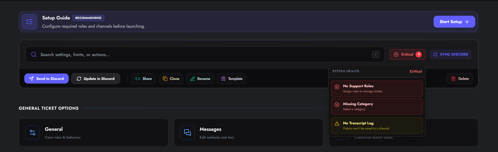
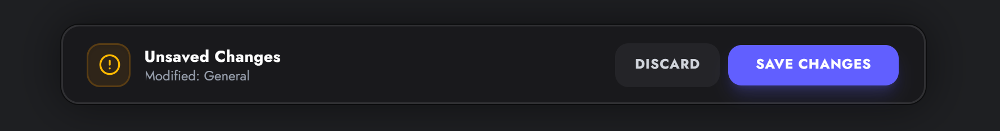
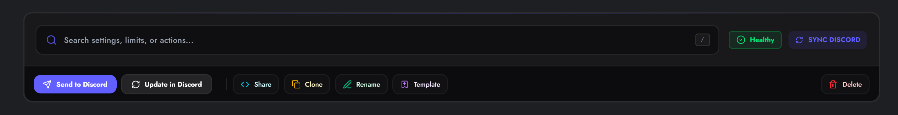

The Panel Editor
The Panel Editor is your workspace for building support workflows. It features a real-time health check system, auto-save protection, and granular control over every aspect of your ticket system.

Editor Navigation
The sidebar navigation is divided into three logical groups to help you find settings quickly:
1. General Ticket Options
Core settings that define how the ticket behaves once created.
- General — Basic behavior like "Two-Step Close" and management roles.
- Messages — The embed builder for Welcome messages, Panel messages, and DMs.
- Buttons — Customize the color, label, and emoji of interaction buttons.
- Permissions (Premium) — Configure channel visibility and role overrides.
2. Panel Creation Settings
Settings that affect how the user starts the interaction.
- Categories — Define which Discord Category the ticket channel appears in.
- Layout — Switch between Standard Buttons, Select Menus (Dropdowns), or Multi-Panel layouts.
- Forms — Create modal questionnaires that users must fill out before a ticket opens.
- Threads (Premium) — Toggle "Tickets as Threads" mode to keep your channel list clean.
3. Advanced Settings & Automation
Powerful tools for large communities and professional support teams.
- Transcripts — Configure HTML log saving, Google Drive sync, and audit logging channels.
- Limits — Set per-user ticket caps and operational hours (Schedules).
- Claiming — Enable the "Claim Ticket" system for staff ownership.
- Escalation — Configure rules for transferring tickets to other panels.
- Automation — Auto-close on user leave and automated DM notifications.
- Ratings — Enable the CSAT (5-star) feedback system.
Editor Interface Features
Health Check (Status Badge)
In the top right, you will see a live Health Status badge. * 🟢 Healthy: The panel is ready to use. * 🟡 Warning: Non-critical issues found (e.g., "No Transcript Channel selected"). * 🔴 Critical: Configuration errors that prevent the panel from working (e.g., "No Support Roles selected").
Click the badge to see a detailed checklist and "Fix" shortcuts.

Save System
The editor tracks your changes locally. If you modify a setting, a Save Bar appears at the bottom of the screen. * Discard: Reverts all unsaved changes to the last stable version. * Save Changes: Pushes your configuration to the live bot.

Idle Protection
If you leave the editor open without saving, an "Idle" modal will appear to prevent data loss.
Action Menu
Located in the top toolbar (or under the "More" menu on mobile), these tools allow you to manage the panel itself.

| Action | Icon | Description |
|---|---|---|
| Send to Discord | Posts the configured Panel Message to a text channel of your choice. | |
| Update in Discord | Updates the content/embeds of an existing panel message without deleting/reposting it. Requires the Message Link. | |
| Get Code | Generates a shareable code (XXXX-XXXX-XXXX) to copy this configuration to another server. |
|
| Clone | Creates an exact duplicate of this panel within the same server. Useful for A/B testing. | |
| Template | Saves this configuration as a Template (Public or Private) for future use. | |
| Rename | Change the internal name of the panel (e.g., "Support" -> "Billing"). | |
| Delete | Permanently removes the panel configuration. This action cannot be undone. |